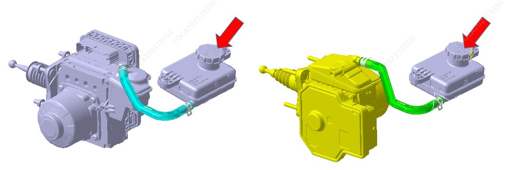
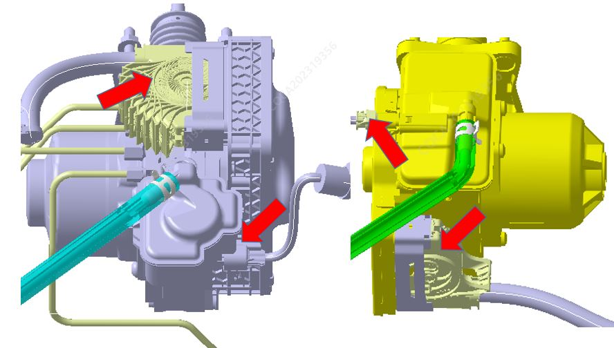
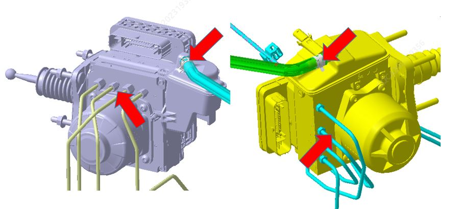
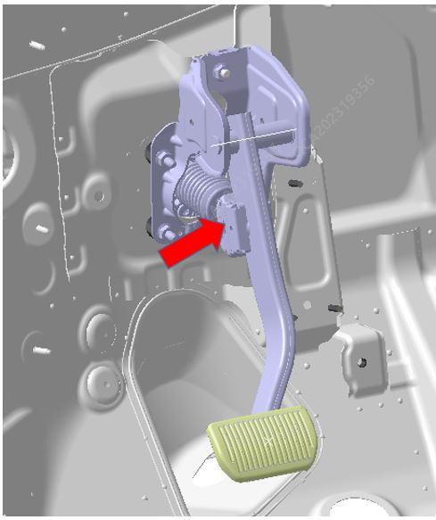
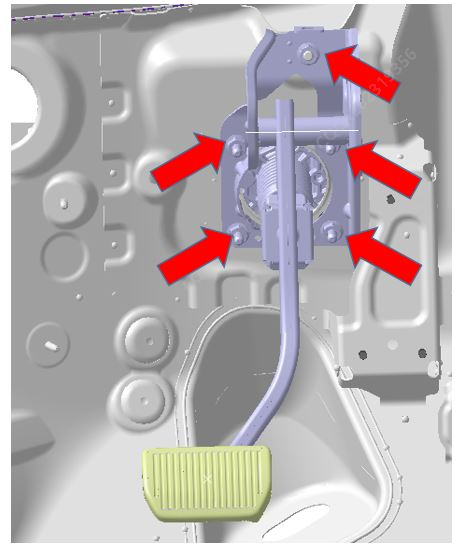

Материалы
| Наименование | Модель |
| Тормозная жидкость | HZY4/DOT4 |
Снятие
Выключить Питание автомобиля и отсоединить жгут проводов отрицательной клеммы Аккумуляторная батарея. Ссылка Аккумуляторная батарея в сборе
Слить тормозную жидкость из бачка для жидкости.
Снять крышку дистанционного бачка для жидкости.

Используя подходящую чистую пластиковую трубку, подсоединить один конец к штуцеру выпуска воздуха тормоза, а другой опустить в подходящий контейнер.
Ослабить штуцер выпуска воздуха.
Не включая питание, многократно нажимать на педаль тормоза, пока вся тормозная жидкость из бачка полностью не выльется.
Затянуть штуцер выпуска воздуха.
Отсоединить разъем датчика уровня тормозной жидкости и электрический разъем жгута проводов модуля управления, во время снятия избегать загрязнения разъема маслом, расположение показано на рисунке.

Снять соединительный шланг и хомут IBCU, отсоединить соединительный шланг, затем с помощью рожковых гаечных ключей M10 и M12 отсоединить тормозные трубки от интегрированного модуля управления тормозной системой, момент затяжки: 16 ± 2 N.m / 18 ± 2 N.m.

Снять интегрированный модуль управления тормозной системой.
Отсоединить шарнир соединения педали тормоза с интегрированным модулем управления тормозной системой.

С помощью шестигранной торцевой головки M13 открутить 4 крепежные гайки интегрированного модуля управления тормозной системой и педали тормоза, а также 1 болт крепления педали тормоза к кузову, момент затяжки: 22 ± 2 N.m.

Извлечь интегрированный модуль управления тормозной системой наружу.
Установка
Установить интегрированный модуль управления тормозной системой в монтажное отверстие передней панели, наживить гайки и затянуть их. Момент затяжки: 23 ± 2.3 N.m.
Нажать на площадку педали вниз рукой до щелчка, что означает завершение сборки толкателя с шаровой головкой интегрированного модуля управления тормозной системой и шарикового шарнира педали.
Сначала затянуть штуцеры тормозных трубок на интегрированном модуле управления тормозной системой от руки, затем затянуть с помощью рожковых гаечных ключей M10 и M12, момент затяжки: 16 ± 2 N.m / 18 ± 2 N.m.
Подсоединить разъем датчика уровня тормозной жидкости и электрический разъем жгута проводов интегрированного модуля управления тормозной системой.
Подключить отрицательную клемму Аккумуляторная батарея, см. Аккумуляторная батарея в сборе.
Если был заменен новый Интегрированный модуль управления тормозной системой, после разблокировки автомобиля и включения питания необходимо сначала с помощью компьютера подключить диагностический прибор SDA к диагностическому порту OBD под сиденьем водителя, выполнить прошивку соответствующего шланга и удаление воздуха с помощью ПО.
Затем выполнить механическое удаление воздуха из тормозной системы, см.: Удаление воздуха из тормозной системы
Закрыть крышку бачка для тормозной жидкости.